L’étude porte sur la performance énergétique des logements individuels situés dans le département de la Haute-Garonne. Cette population comprend 1000 logements construits entre 1900 et 2020, pour lesquels un diagnostic de performance énergétique a été réalisé avant juillet 2021. Le DPE permet d’évaluer la consommation énergétique d’un bâtiment ainsi que ses émissions de gaz à effet de serre. Les logements classés F ou G pour la consommation énergétique sont qualifiés de « passoires énergétiques » et sont soumis à des restrictions légales visant à limiter leur impact environnemental.
Source des données
Les données utilisées dans cette étude proviennent de l’Agence de la transition écologique (ADEME), accessibles sur le portail open data de l’ADEME.
Variables de l’échantillon
Les variables sélectionnées pour cette étude sont les suivantes :
type_logement : type du logement (1 = appartement, 2 = maison) — variable qualitative.
annee_construction : année de construction du logement — variable quantitative.
surface_habitable : surface habitable en mètres carrés — variable quantitative.
type_energie_chauffage : type d’énergie utilisée pour le chauffage (1 = gaz, 2 = électricité, 3 = autre) — variable qualitative.
conso_energie : consommation énergétique annuelle en kWhEP/m² — variable quantitative.
classe_conso_energie : classe de consommation énergétique (de A à G) — variable qualitative.
emission_ges : émissions de gaz à effet de serre en kg éq.CO₂/m² — variable quantitative.
cv=round((sd(anciennete)/mean(anciennete))*100) # cv = coeff de variationcv
[1] 75
On a donc le moyen(Mean) est 34.58 et l’écart-type est 26 donc le distance entre le moyen et le sd est 26 donc l’âge de logement est entre 9 et 61 ans.
Le CV est 75% donc l’âge des logements est très hétérogène, avec des écarts importants par rapport à l’âge moyen.
Alors, l’écart-type de l’ancienneté est de 25,88 ans et le coefficient de variation atteint 75 %, ce qui révèle une très forte dispersion. Cette hétérogénéité s’explique par la présence de logements très anciens aux côtés de logements récents.
Xem code R/Python
par(cex.main=1.5, cex.lab=1.3, cex.axis=1.2)hist(data_dpe$anciennete,main ="Distribution de l'ancienneté des logements",xlab ="Ancienneté (années)",ylab ="Fréquence",col ="skyblue",border ="white")# Calculer moyenne et medianmoyenne <-mean(data_dpe$anciennete)mediane <-median(data_dpe$anciennete)# Ajouter une ligne pour la moyenne (rouge)abline(v = moyenne, col ="red", lwd =2)text(moyenne, par("usr")[4]*0.9,labels =paste0("Moyenne = ", round(moyenne,1)),col="red", pos=4)# Ajouter une ligne pour la médiane (vert)abline(v = mediane, col ="green", lwd =2)text(mediane, par("usr")[4]*0.8,labels =paste0("Median = ", mediane),col="green", pos=4)
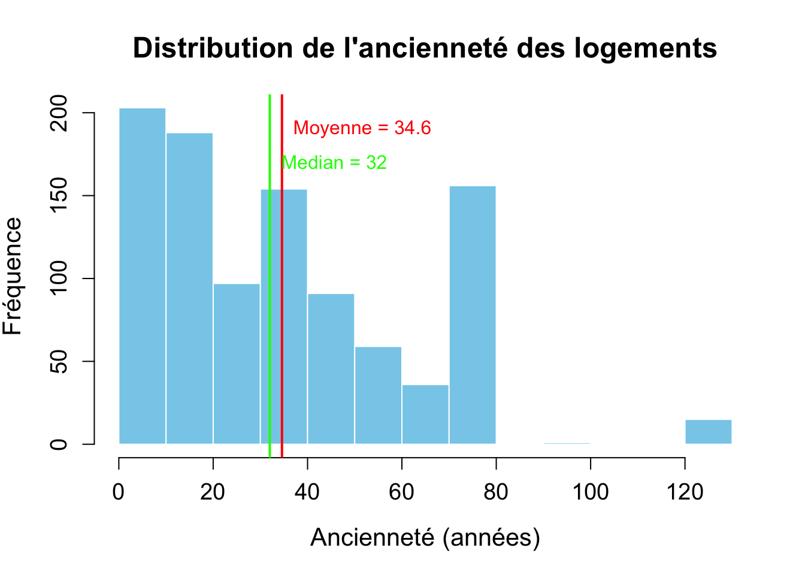
Remarque:
L’ancienneté moyenne des logements est de 34,58 ans, tandis que la moitié des logements ont une ancienneté inférieure à 32 ans (médiane).
Ancienneté moyenne ≈ 34,58 ans → âge moyen de tous les logements de l’échantillon.
Médiane = 32 ans → 50% des logements ont un âge < 32 ans, 50% ≥ 32 ans.
En comparant ces deux valeurs → la moyenne > la médiane → cela indique la présence de logements très anciens qui tirent la moyenne vers le haut.
Ensuite, le logement le plus récent a 1 an, tandis que le logement le plus ancien a 121 ans.
Logement le plus récent : 1 an
Logement le plus ancien : 121 ans
Ces valeurs sont des outliers, créant une forte dispersion des données.
Le coefficient de variation est de 75 %, ce qui indique une dispersion importante des données.
CV = 75 % → les âges des logements sont très hétérogènes
En d’autres termes, certains logements sont très récents, d’autres très anciens.
La distribution de l’ancienneté est asymétrique à droite avec une concentration élevée de logements récents (moins de 20 ans).
Beaucoup de logements sont récents (<20 ans)
Quelques logements très anciens (>80 ans) sont présents mais en minorité
Le boxplot montre une dispersion notable avec quelques valeurs extrêmes représentant des logements très anciens.
La majorité des données se concentrent autour de la médiane
Quelques points hors norme (outliers) correspondent aux logements très anciens
Conclusion générale
Ces observations indiquent que, bien que la majorité des logements soient relativement récents, le parc immobilier inclut également des logements très anciens, ce qui contribue à la forte variation de l’ancienneté dans cet échantillon.
La plupart des logements sont récents
Mais certains logements très anciens sont présents
Cela explique le CV élevé (75%) et la grande dispersion des âges des logements
Surface habitable
Xem code R/Python
summary(data_dpe$surface_habitable)
Min. 1st Qu. Median Mean 3rd Qu. Max.
16.00 45.75 66.00 82.51 95.25 1452.00
hist(data_dpe$surface_habitable, main ="Distribution de la surfacehabitable", xlab ="Surface habitable",ylab ="Fréquence")
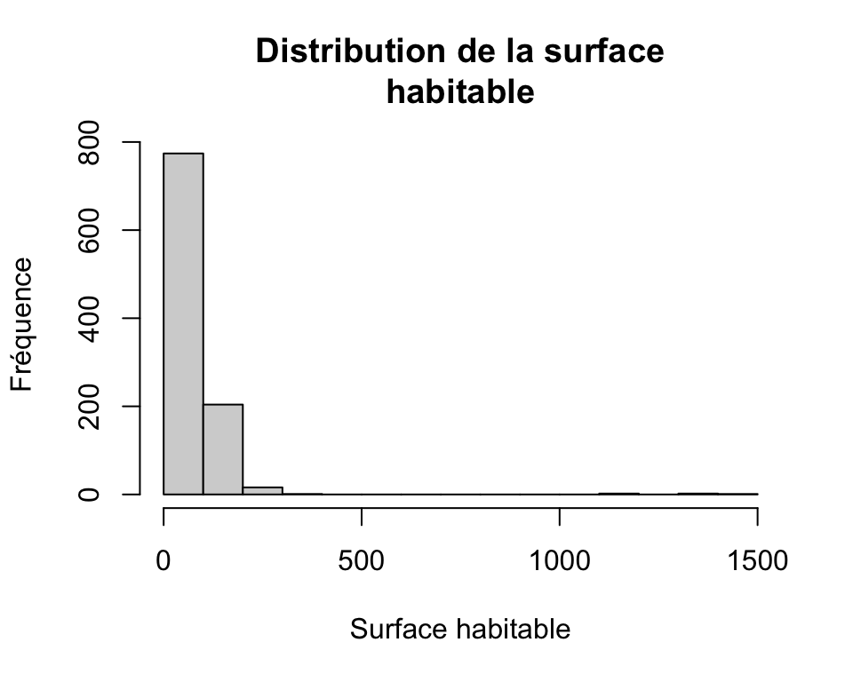
Xem code R/Python
boxplot(data_dpe$surface_habitable, main ="Distribution de la surfacehabitable", xlab ="Surface habitable",ylab ="Fréquence",col ="cyan")
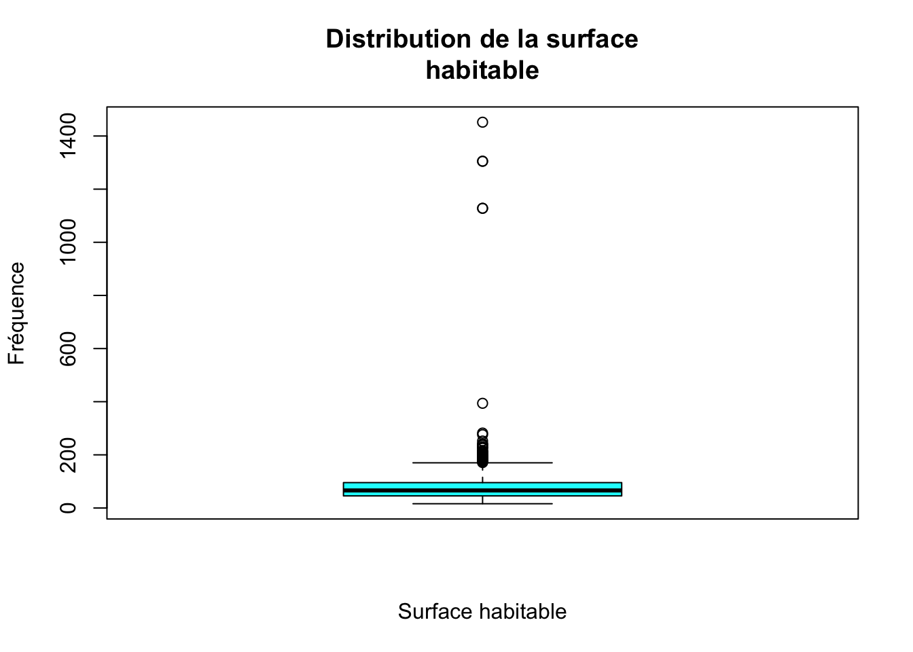
Les surfaces habitables varient entre 16 m² (minimum) et 1452 m² (maximum). La moyenne est de 82.51 m², tandis que la médiane est de 66 m², indiquant une distribution asymétrique avec des valeurs extrêmes.
Le coefficient de variation (CV) est très élevé, à 115 %, ce qui révèle une forte dispersion des surfaces habitables.
La majorité des logements ont une surface habitable inférieure à 200 m², avec une surreprésentation des petites surfaces (moins de 100 m²). Les surfaces supérieures à 500 m² sont très rares.
Le boxplot met en évidence de nombreuses valeurs aberrantes, avec des surfaces très éloignées de la majorité des données, notamment une valeur extrême à 1452 m².
La répartition des surfaces habitables est très hétérogène, avec une concentration sur les petites surfaces, tandis que les grandes surfaces constituent quelques exceptions.
Consommation d’énergie
Xem code R/Python
summary(data_dpe$conso_energie)
Min. 1st Qu. Median Mean 3rd Qu. Max.
27.92 114.73 181.16 184.12 238.25 591.35
hist(data_dpe$emission_ges, main ="Distribution de la consommation degaz à effet de serre",xlab ="consommation de gaz à effet de serre",ylab ="Fréquence")
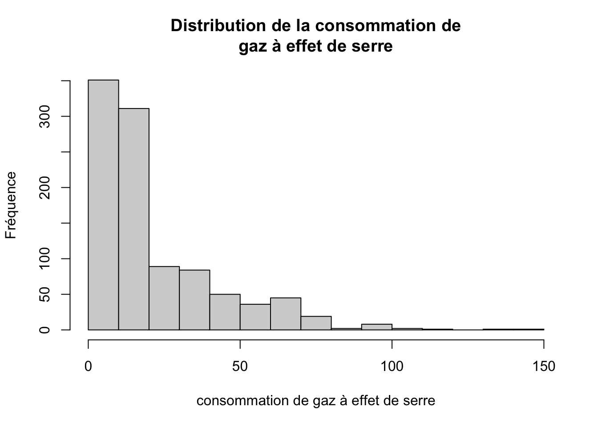
Xem code R/Python
boxplot(data_dpe$emission_ges, main ="Distribution de la consommationde gaz à effet de serre",xlab ="consommation de gaz à effet de serre",ylab ="Fréquence",col ="lightblue")
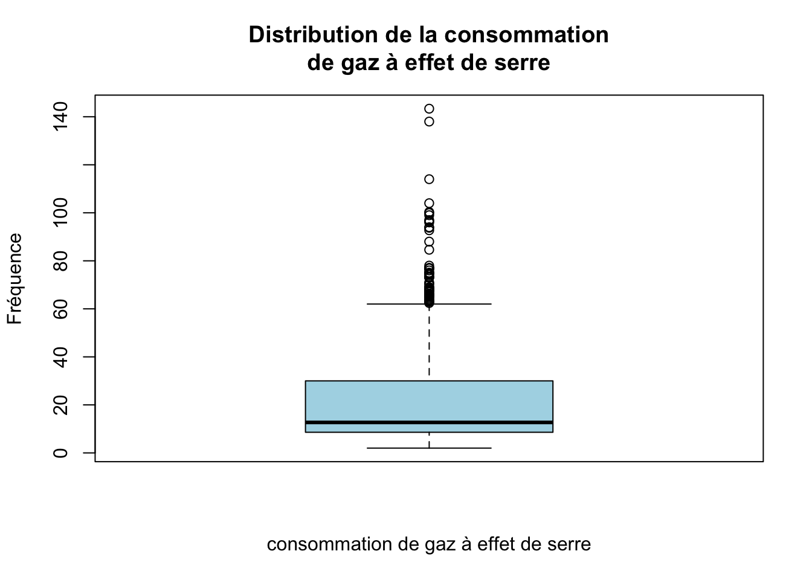
La consommation de gaz à effet de serre varie entre 2 et 143.4 avec une moyenne de 21.93 et une médiane de 12.7. Les trois quarts des observations ont une consommation inférieure à 30.
Le coefficient de variation est de 94%, ce qui est une très forte dispersion des consommations.
L’histogramme montre une distribution très asymétrique , ou la majorité consomme peu de gaz à effet de serre, tandis qu’une minorité affiche des valeurs très élevées.
La boite a moustache met en évidence de nombreuses valeurs extrêmes, représentant des consommations exceptionnellement élevées.
Ces observations montre que la majorité consomme peu mais un petit groupe génère des émissions très élevées, influencent fortement la moyenne
barplot(table(data_dpe$type_logement), main ="Distribution du type delogement",xlab ="Type de logement",ylab="Frequence",col =c("yellow","red"))
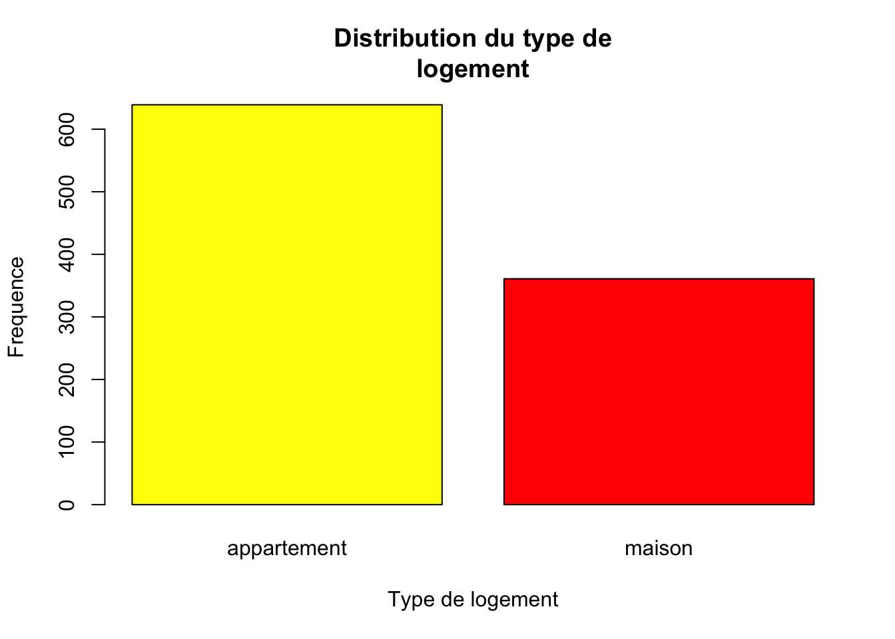
Xem code R/Python
barplot(table(data_dpe$type_logement),main ="Distribution du type de logement",xlab ="Fréquence",ylab ="Type de logement",col =c("cyan", "#1A75FF"),horiz =TRUE)
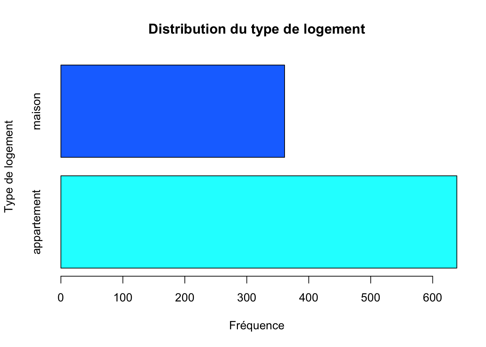
Les appartements sont majoritairement, représentant 63.9% des logements, tandis que les maisons sont juste 36.1%.
Le diagramme illustre clairement la différence avec une proportion clairement plus élevée pour les appartements.
Dans cette population, on peut constater que les appartements sont plus fréquentés.
barplot(table(data_dpe$type_energie_chauffage), main ="Distribution du type de l'energie chauffage" ,xlab ="Type de de l'énergie chauffage" ,ylab="Frequence",col=c("lightpink","slategray1","coral4"))
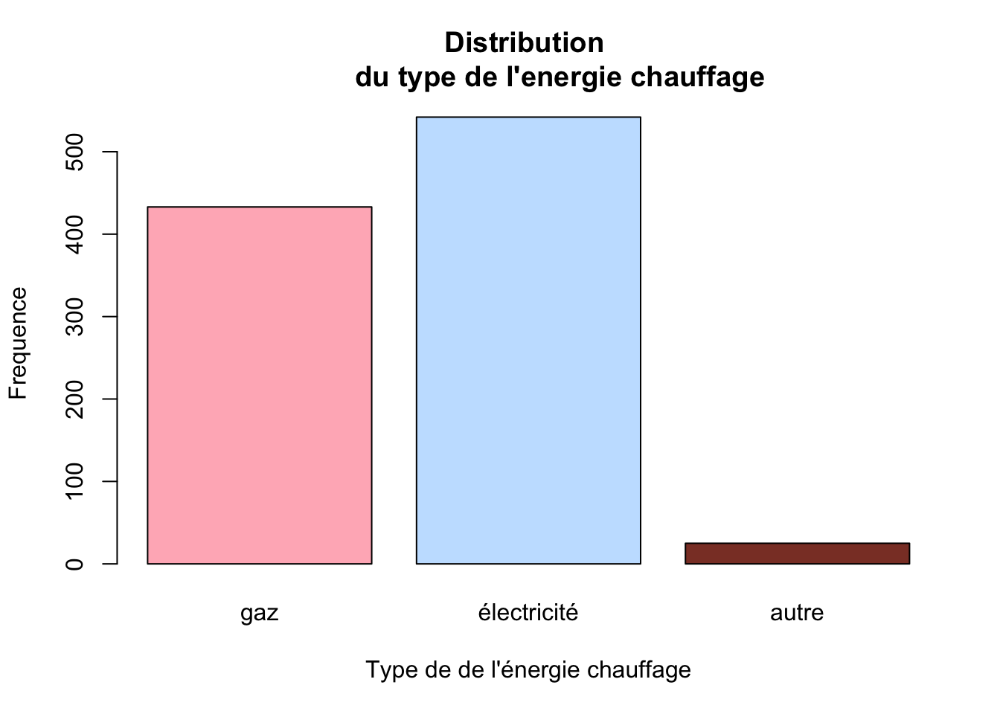
Les chauffages de type électronique sont majoritaires,avec 54.2%, suivis par le gaz avec 43.3%. Les autres types sont marginaux avec seulement 2.5%.
Le diagramme reflète cette répartition, montrant une légère dominance de l’électricité comme source principale.
Ces données montrent une préférence pour l’électricité, possiblement liée à son accessibilité; le gaz aussi reste une source alternative significative.
Les classes B et C sont les plus fréquentes, représentant respectivement 29,5 % et 27,4 % des logements. Les classes A, D, et E sont moins nombreuses, avec des proportions respectives de 9,8 %, 12,1 %, et 12,7 %. Enfin, les classes F et G sont marginales, avec 7 % et seulement 1,5 %.
Le diagramme en barres montre clairement cette répartition, mettant en évidence une forte concentration dans les classes intermédiaires (B et C).
Cette répartition suggère que la majorité des logements ont une consommation énergétique modérée (B et C), tandis que les logements très performants (A) et les logements très énergivores (F et G) sont beaucoup moins courants.
Analyse en composantes principales (ACP)
Objectif de l’ACP
Nous réaliserons une Analyse en Composantes Principales (ACP) afin d’explorer les relations entre les variables quantitatives et de visualiser les corrélations entre elles.
Comme les variables ne sont pas exprimées dans les mêmes unités donc il faut centrer et réduire les données ( on peut utiliser la fonction scale)
Xem code R/Python
m<-colMeans(data)s<-apply(data,MARGIN=2,FUN='sd')I<-rep(1,nrow(data))M<-I%*%t(m);S<-I%*%t(s);X<-(data-M)/Sboxplot(X,las=1,cex.axis =0.75, col ="aquamarine")
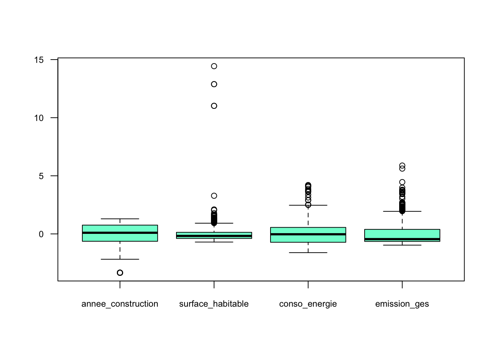
Valeur propre et inertie
La matrice des covariances
Xem code R/Python
X<-as.matrix(X)# pour éviter les problèmesV<-cor(X)round(V,2)
Remarque que: Corrélation ±1 = forte, 0 ≈ sans lien
En obeservant, on a donc:
annee_construction : corrélation négative avec conso_energie (-0,49), corrélation négative avec emission_ges (-0,51) → Plus la maison est récente, plus la consommation d’énergie et les émissions sont faibles.
surface_habitable : presque pas de corrélation avec les autres variables (-0,01, -0,13, 0,02) → La surface habitable n’a pas beaucoup d’impact sur l’énergie ou les émissions dans cet échantillon.
conso_energie et emission_ges : corrélation positive de 0,44 → Plus la maison consomme d’énergie, plus elle émet de gaz à effet de serre.
Les valeurs propres
Xem code R/Python
E<-eigen(V,symmetric=TRUE)round(E$values,2)
[1] 1.96 1.02 0.54 0.47
PC1 (1,96) Explique ~1,96 / 4 ≈ 49 % de la variance totale → C’est l’axe le plus important. En regardant la matrice de corrélation, PC1 combine conso_energie, emission_ges et annee_construction (corrélations ≈ ±0,5).
PC2 (1,02) Explique ~1,02 / 4 ≈ 26 % de la variance totale → Deuxième axe important, généralement lié à surface_habitable (même si elle est peu corrélée aux autres variables, PC2 « absorbe » la variance restante).
PC3 (0,54) Explique ~13 % de la variance → Troisième axe moins significatif, apporte peu d’information. Souvent utilisé seulement si l’on souhaite modéliser l’intégralité de la variance.
PC4 (0,47) Explique ~12 % de la variance → Quatrième axe le moins important, presque du bruit → souvent ignoré dans l’analyse visuelle.
Xem code R/Python
plot(E$values,ylab='valeurs propres')
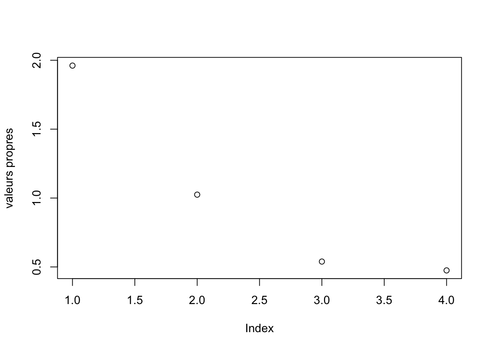
Selon la règle de Kaiser, seules les composantes principales dont la valeur propre est supérieure à 1 sont conservées. Dans notre cas, les deux premières composantes vérifient ce critère.
Par ailleurs, l’examen du scree plot met en évidence un coude au niveau de la deuxième composante, ce qui confirme le choix de conserver deux axes factoriels.
Ces deux composantes expliquent environ 75 % de la variance totale.
Xem code R/Python
cumsum(E$values)/ncol(X)
[1] 0.4903311 0.7465221 0.8812858 1.0000000
PC1 (49%) Représente près de la moitié de la variance totale des données. C’est l’axe le plus important, principalement lié à : conso_energie, emission_ges, annee_construction (corrélation négative)
PC2 (26%) Explique 26% supplémentaires → PC1 + PC2 = 74% de la variance totale. Principalement lié à surface_habitable et à la variance restante.
PC3 + PC4 (13% + 12%) Représentent environ 25% de la variance restante. Souvent ignorés dans les visualisations ; garder PC1 et PC2 suffit pour percevoir la structure des données.
Xem code R/Python
# Matrice des vecteurs propres (eigenvectors) arrondie à 2 décimalesround(E$vectors,2)
# Coordonnées dans la nouvelle baseY<-X%*%E$vectors# calcul des corrélations avec la formule: k=2D<-diag(sqrt(E$values))C=E$vectors%*%D[,1:k]; # méthode directe: C2=cor(X,Y[,1:k])C2-C # vérification
plot(C,main='cercle de corrélation',ylim=c(-1,1),xlim=c(-1,1),asp =1 )text(C,labels=colnames(X),pos=4,cex=0.7) # ajout des labels aux points# on ajoute le cercle et les deux axesx<-seq(-1,1,0.01)lines(x,sqrt(1-x^2))lines(x,-sqrt(1-x^2))abline(h=0)abline(v=0)
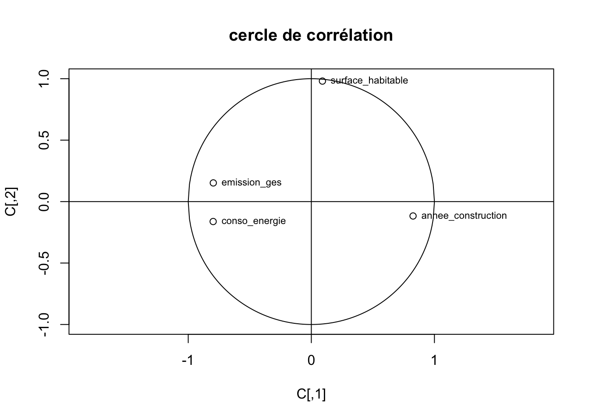
Signification des axes (C[1] et C[2])
Axe horizontal (C[1] – PC1) : Il s’agit de la première composante principale, qui explique la plus grande part de la variance des données.
Axe vertical (C[2] – PC2) : Il s’agit de la deuxième composante principale, orthogonale à PC1, expliquant la deuxième plus grande part de la variance.
Relations entre les variables (Corrélations)
La distance et l’angle entre les points (variables) indiquent leur niveau de corrélation :
Corrélation positive : emission_ges (émissions de gaz à effet de serre) et conso_energie (consommation d’énergie) sont très proches l’une de l’autre. Cela signifie qu’elles sont positivement corrélées : les logements qui consomment beaucoup d’énergie ont généralement des émissions élevées.
Corrélation négative : annee_construction (année de construction) est situé à l’opposé du groupe énergie/émissions par rapport au centre du cercle (selon l’axe horizontal). Cela suggère que les bâtiments plus anciens (année de construction plus faible) ont tendance à consommer davantage d’énergie et à émettre plus de gaz à effet de serre.
Indépendance (absence de corrélation) : surface_habitable (surface habitable) est proche de l’axe vertical, formant un angle proche de 90° avec les autres variables. Cela signifie que, dans cet ensemble de données, la surface du logement est peu liée à l’année de construction ou à la performance énergétique par unité de surface.
Qualité de la représentation (Distance à l’origine)
Dans un cercle de corrélation standard (de rayon égal à 1) :
Plus un point est proche du bord du cercle, mieux la variable est expliquée par les deux premières composantes principales.
On peut utiliser aussi les fonctions de R, ce sera plus rapide.
Xem code R/Python
library(FactoMineR)library(factoextra)
Loading required package: ggplot2
Welcome! Want to learn more? See two factoextra-related books at https://goo.gl/ve3WBa
Xem code R/Python
acp <-PCA(X, scale.unit = T)
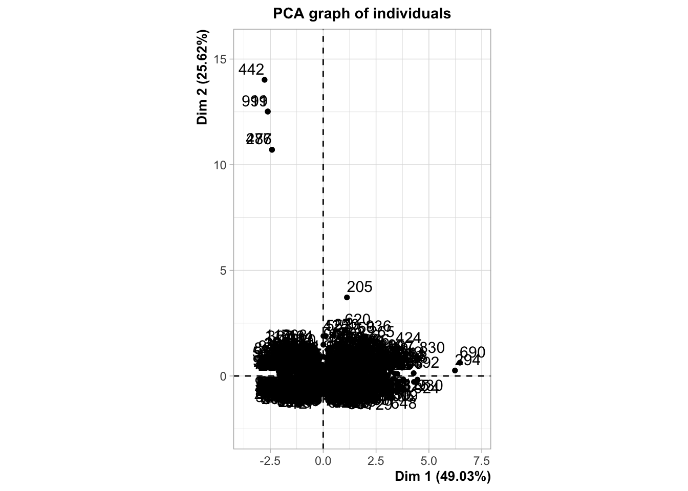
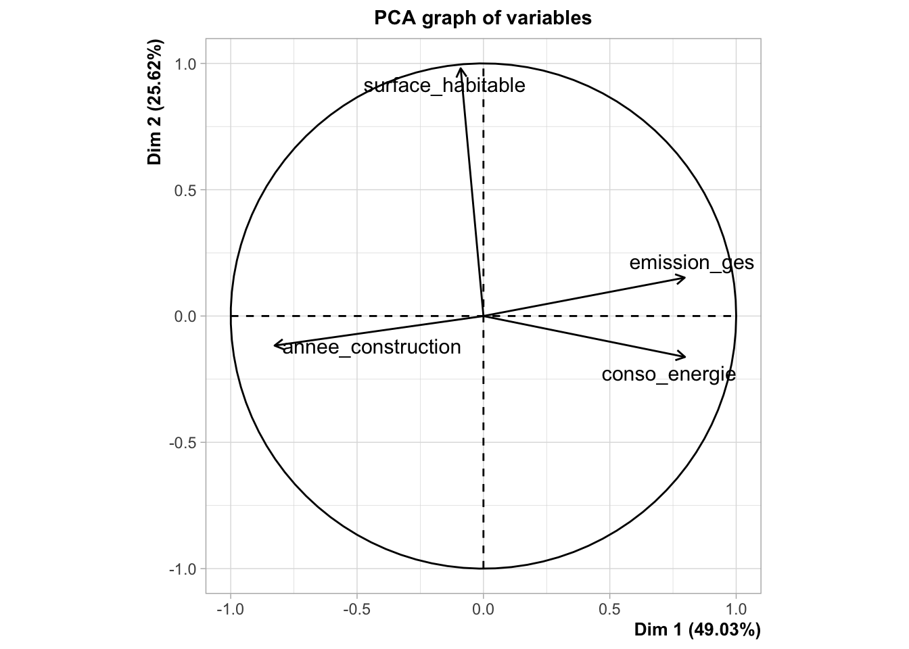
Xem code R/Python
fviz_eig(acp,addlabels = T)
Warning in geom_bar(stat = "identity", fill = barfill, color = barcolor, :
Ignoring empty aesthetic: `width`.
Warning: Using `size` aesthetic for lines was deprecated in ggplot2 3.4.0.
ℹ Please use `linewidth` instead.
ℹ The deprecated feature was likely used in the ggpubr package.
Please report the issue at <https://github.com/kassambara/ggpubr/issues>.
Warning: `aes_string()` was deprecated in ggplot2 3.0.0.
ℹ Please use tidy evaluation idioms with `aes()`.
ℹ See also `vignette("ggplot2-in-packages")` for more information.
ℹ The deprecated feature was likely used in the factoextra package.
Please report the issue at <https://github.com/kassambara/factoextra/issues>.
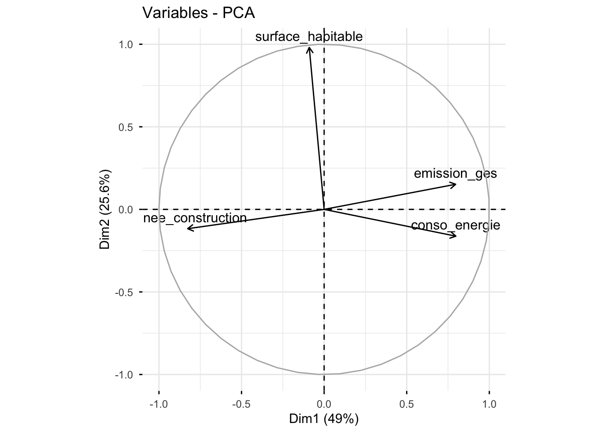
Analyse des correspondances multiples (ACM)
Objectif de l’ACM
Nous réaliserons une Analyse des correspondances multiples (ACM) afin d’explorer les relations entre les variables qualitatives et de visualiser les associations entre elles.
Xem code R/Python
maison <- data_dpedata1 <- maison[, c("type_logement","type_energie_chauffage","classe_conso_energie")]summary(data1)
type_logement type_energie_chauffage classe_conso_energie
Min. :1.000 gaz :433 Length:1000
1st Qu.:1.000 électricité:542 Class :character
Median :1.000 autre : 25 Mode :character
Mean :1.361
3rd Qu.:2.000
Max. :2.000
type_logement type_energie_chauffage classe_conso_energie
Appartement:639 gaz :433 A: 98
Maison :361 électricité:542 B:295
autre : 25 C:274
D:121
E:127
F: 70
G: 15
Valeur propre
Xem code R/Python
data1.mca <-MCA(data1, graph =FALSE)data1.mca$eig
eigenvalue percentage of variance cumulative percentage of variance
dim 1 0.5654050 18.846832 18.84683
dim 2 0.4397829 14.659430 33.50626
dim 3 0.3651877 12.172924 45.67919
dim 4 0.3333333 11.111111 56.79030
dim 5 0.3333333 11.111111 67.90141
dim 6 0.3333333 11.111111 79.01252
dim 7 0.2714109 9.047031 88.05955
dim 8 0.2470885 8.236284 96.29583
dim 9 0.1111250 3.704166 100.00000
D’après l’orientation des flèches, nous distinguons trois groupes de logements :
Groupe “Vert” (Appartement & Électricité) : Les flèches Appartement, Électricité et les classes B, C (voire A) pointent toutes vers la gauche. donc les appartements (Appartement) ont tendance à utiliser davantage l’électricité et présentent de meilleures performances énergétiques (souvent les classes B ou C).
Groupe “Moyen - Standard” (Gaz) : La flèche Gaz pointe dans la même direction que les classes D et E (dans le quadrant inférieur droit) donc les logements utilisant le gaz comme principale source de chauffage se situent généralement dans une catégorie de performance énergétique moyenne à faible (classes D ou E).
Groupe “Particulier & Ancien” (Maison & Autres énergies) : Les flèches G et Autre sont très longues et pointent vers le quadrant supérieur droit. La flèche Maison pointe également dans cette direction (même si elle est plus courte). Donc il s’agit d’une corrélation très forte. Les logements utilisant d’autres sources d’énergie (comme le charbon ou le fioul) appartiennent presque systématiquement à la classe G (la moins performante). Par ailleurs, les maisons (Maison) ont tendance à se situer dans le groupe des performances énergétiques les plus faibles par rapport aux appartements.
Conclusion, pour économiser de l’énergie, privilégiez les appartements utilisant l’électricité (souvent classés B ou C). Si vous habitez dans une maison utilisant le gaz, vous risquez de vous retrouver dans les classes D ou E. Enfin, quel que soit le type de logement, si l’énergie utilisée est “Autre” (autre), il s’agit presque toujours d’un logement très énergivore (classe G).
Carte des variables de la MCA 2
Xem code R/Python
fviz_mca_var(data1.mca,choice='var',repel=TRUE)
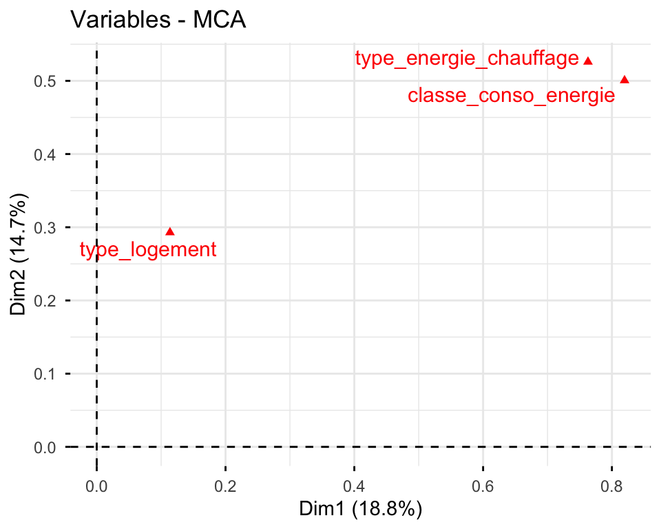
1. Contribution des variables aux dimensions
Axe Dim1 (18,8%) : fortement influencé par classe_conso_energie et type_energie_chauffage, ces deux variables étant très éloignées vers la droite de l’axe horizontal (valeurs > 0,6). Donc la plus grande variation dans vos données provient principalement du type d’énergie utilisé et de la classe énergétique du logement.
Axe Dim2 (14,7%) : la variable type_energie_chauffage est la plus élevée sur l’axe vertical. Donc le type d’énergie (électricité, gaz, autre) constitue le deuxième facteur le plus important pour distinguer les groupes de logements.
type_logement (type de logement) : situé assez proche de l’origine (0,0) par rapport aux deux variables précédentes c’est à dire être appartement ou maison individuelle n’apporte pas de différence statistique aussi importante que le type d’énergie et la classe énergétique.
2. Corrélation entre les variables
Point de convergence : on observe que type_energie_chauffage et classe_conso_energie se trouvent très proches l’une de l’autre dans le quadrant supérieur droit.
Signification : Ces deux variables sont extrêmement liées. Connaissant le type d’énergie d’un logement, on peut presque prédire sa classe énergétique (et inversement). Cela explique pourquoi, sur le graphique précédent, « électricité » est systématiquement associé aux classes A et B, tandis que « autre énergie » est toujours liée à la classe G.
3. Implications pratiques et segmentation des logements
Les logements peuvent être divisés en deux groupes principaux :
Groupe à bonne performance : principalement des appartements utilisant l’électricité, situés à gauche (négatif) de Dim1.
Groupe à risque / soumis à des restrictions légales (F, G) : principalement des maisons utilisant le gaz ou d’autres énergies, situées à droite (positif) de Dim1.
Axes d’action : Pour les mesures légales ou les politiques de rénovation à Haute-Garonne, la priorité devrait être donnée au type d’énergie utilisé plutôt qu’au type de logement.
4. Relation avec l’âge des bâtiments
Bien que la variable année de construction ne soit pas incluse dans cette MCA (variable quantitative), les analyses précédentes (PCA) montrent que les “passoires énergétiques” (F, G) ne concernent pas uniquement les bâtiments anciens, mais résultent d’une combinaison logement ancien + énergie obsolète (autre/gaz)
Xem code R/Python
fviz_contrib(data1.mca,choice='var')
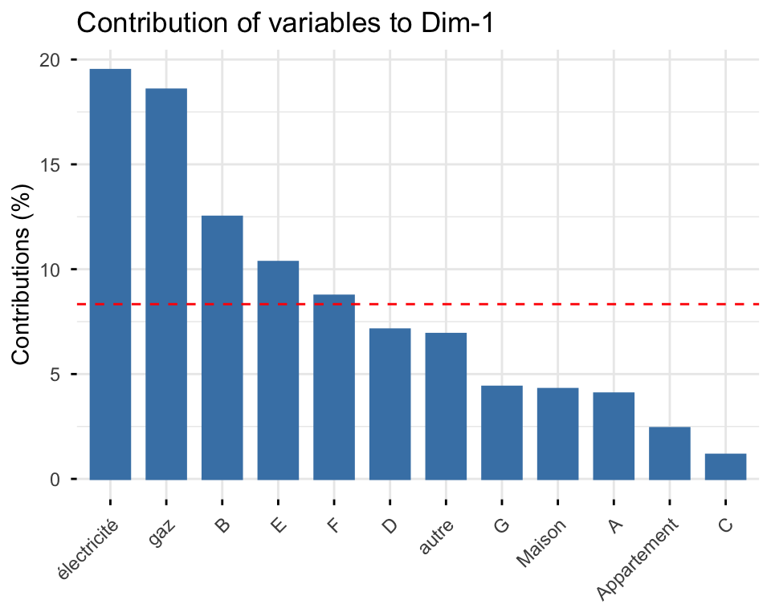
1. Contribution principale des types d’énergie
Le diagramme en colonnes montre que les variables qui contribuent le plus à la première dimension (Dim1), représentant la performance énergétique, sont les types d’énergie :
Électricité et Gaz : ce sont les deux variables ayant les colonnes les plus élevées, représentant respectivement près de 20 % et 19 % de contribution. Interprétation : Cela confirme que la principale différence entre un logement “vert” et un logement “mauvais” dans la Haute-Garonne provient du fait qu’il utilise de l’électricité ou du gaz.
Lien avec le graphique précédent :
L’électricité se situe du côté négatif de Dim1 (avec les classes A/B).
Le gaz se situe du côté positif (avec les classes D/E/F). Conclusion : Passer du chauffage au gaz au chauffage électrique est un levier clé pour améliorer la performance énergétique d’un logement.
2. Différenciation des classes DPE
Les classes B, E, F se trouvent au-dessus de la ligne rouge (moyenne attendue).
Classe F (Passoire énergétique) : contribue significativement à Dim1 (~9 %). Interprétation : La classe F constitue un repère important pour distinguer les logements dans vos données.
Classe G : bien que ce soit la pire catégorie, sa contribution est plus faible que F, probablement parce que dans cet échantillon de 1000 logements, seuls 15 logements appartiennent à la classe G, ce qui limite son poids statistique sur le graphique de contribution.
3. Rôle limité du type de logement (Maison vs Appartement)
Les colonnes Maison et Appartement apparaissent très faibles (<5 %). Interprétation : À Haute-Garonne, le type de logement n’influence pas la performance énergétique autant que le type d’énergie utilisé.
Exemple : Un appartement avec un ancien système de chauffage peut avoir une performance plus faible qu’une maison ayant modernisé son chauffage électrique.
1. Polarisation selon la performance énergétique (Axe horizontal Dim1)
L’axe horizontal (Dim1) joue toujours le rôle de “baromètre de performance” :
Groupe à gauche (valeurs négatives) : forte densité de points, représentant les logements performants (classes A, B, C) utilisant principalement l’électricité. Cette concentration indique que la majorité des 1000 logements de votre échantillon sont de qualité stable.
Groupe à droite (valeurs positives) : points plus clairsemés mais étendus vers la droite, correspondant aux logements à faible performance énergétique.
2. Identification des “Passoires Énergétiques” (Quadrant supérieur droit)
Certains logements, par exemple les numéros 363, 63, 793, 294, 830, se trouvent isolés dans le quadrant supérieur droit, suivant la direction des flèches G et Autre observées sur les graphiques précédents.
Conclusion : Ce sont les “passoires énergétiques” typiques de votre étude. Elles présentent non seulement la pire performance énergétique, mais utilisent également des sources d’énergie très différentes de la majorité (fioul, chauffage ancien, etc.).
3. Signification des couleurs (cos²)
Les couleurs allant du bleu foncé au bleu clair représentent le cos² (qualité de représentation) :
Bleu clair (valeurs élevées) : le positionnement de ces logements sur les axes Dim1 et Dim2 est très bien expliqué et reflète fidèlement leurs caractéristiques réelles.
Bleu foncé (valeurs faibles) : ces logements ont des caractéristiques atypiques ou “décalées” (par exemple, maisons anciennes partiellement rénovées) que les deux axes ne capturent pas complètement.
4. Rôle limité du type de logement (Maison vs Appartement)
Les données confirment vos observations : le type de logement contribue moins de 5 % à la variation.
Sur le graphique des individus : les maisons et appartements ne forment pas deux groupes distincts.
Interprétation : La séparation des logements se fait principalement selon le système de chauffage, et non selon le type de logement.
Exemple: certains appartements utilisant un chauffage ancien apparaissent à droite (moins performants), tandis que certaines maisons modernisées restent à gauche (performantes).
On va faire le test pour savoir si la classe de consommation dépend-elle du type de chauffage
Hypothèse:
-H0: La classe de consommation indépendante du type de chauffage.
-H1: La classe de consommation dépend du type de chauffage.
Xem code R/Python
type_energie_chauffage <-data_dpe$type_energie_chauffageclasse_conso_energie <- data_dpe$classe_conso_energiebarplot(table(type_energie_chauffage,classe_conso_energie),beside=TRUE,col=c("blue","green","red"), main="Classe conso energie par type chauffage" ,xlab="classe conso energie" ,ylab="Fréquence ",legend.text=TRUE)
Interprétation: - La p-value( < 2.2e-16 ) est inférieure au seuil de 5%. Donc on rejette H0. Il existe une relation entre la classe de consommation et le type de chauffage.
Selon le graphique, les classes A,B,C ont tendance à être de type électricité tandis que les autres sont plus de type gaz.
Test ANOVA
Tester s’il y a une différence réelle de consommation énergétique moyenne entre Maison et Appartement.
On va faire le test pour savoir justifier la relation entre le type de logement et la consommation d’énergie
H0: Il n’y a pas de différence moyenne de consommation énergétique entre Maison et Appartement (toute variation observée est due au hasard)
H1: Il existe une différence réelle de consommation énergétique moyenne entre Maison et Appartement.
Xem code R/Python
anova_result <-aov(conso_energie ~ type_logement, data = maison)summary(anova_result)
Df Sum Sq Mean Sq F value Pr(>F)
type_logement 1 103182 103182 11.1 0.000894 ***
Residuals 998 9275471 9294
---
Signif. codes: 0 '***' 0.001 '**' 0.01 '*' 0.05 '.' 0.1 ' ' 1
Ici, Pr(>F) - 0.000894 < 0.5 donc on rejette H0 et donc il existe une différence réelle de consommation énergétique moyenne entre Maison et Appartement
Xem code R/Python
aggregate(conso_energie ~ type_logement, data = maison, mean)
La valeur moyenne de 197,63 pour les maisons se situe à la frontière entre les classes D et E de l’échelle DPE.
Cela explique pourquoi, dans le graphique des contributions de la MCA, la modalité Maison tend à se projeter vers les classes énergétiques moins performantes (D, E, F) par rapport aux appartements.
Tester si les moyennes des émissions de GES sont identiques selon le type d’énergie de chauffage.
On va faire le test pour savoir justifier les moyennes des émissions de GES sont identiques selon le type d’énergie de chauffage.
H0: Les groupes ont des moyennes d’émissions égales.
H1: Au moins un groupe a une moyenne différente.
Xem code R/Python
moycond <-tapply(data_dpe$emission_ges, data_dpe$type_logement, mean, na.rm=TRUE)boxplot(emission_ges ~ type_energie_chauffage,data = data_dpe,main ="Émissions de GES selon le type de chauffage",xlab ="Type de chauffage",ylab ="Émissions GES (kg éq. CO2/m2)")# ajouter le point de moyenpoints(1:length(moycond), moycond, col="red", pch="*", cex=2)
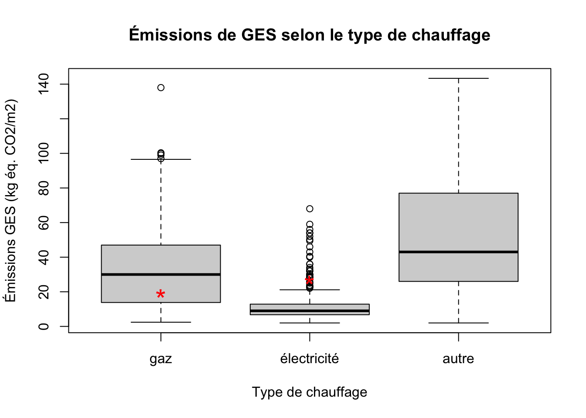
Moyenne des émissions de gaz à effet de serre (emission_ges) selon le type d’énergie de chauffage :
Gaz : ~33,6
Électricité : ~11,1
-Autre : ~55,5
Observation préliminaire : le type d’énergie de chauffage a un impact significatif sur le niveau des émissions.
De plus, les variances des groupes selon le type d’énergie de chauffage ne sont pas égales. Par conséquent, nous utilisons le test oneway.test() (ANOVA de Welch) au lieu de l’ANOVA classique (aov())
Pairwise comparisons using t tests with non-pooled SD
data: data_dpe$emission_ges and data_dpe$type_energie_chauffage
gaz électricité
électricité < 2e-16 -
autre 0.0053 1.8e-06
P value adjustment method: none
Comparaison par paires des groupes d’énergie :
Gaz vs Électricité → p < 2e-16 → différence extrêmement significative
Gaz vs Autre → p = 0,0053 → différence significative
Électricité vs Autre → p = 1,8e-06 → différence extrêmement significative
Conclusion : toutes les paires de groupes d’énergie présentent des différences significatives au niveau des émissions.
Conclusion
L’étude des 1000 logements en Haute-Garonne permet de dégager des conclusions claires sur les facteurs influençant la performance énergétique et les émissions de GES :
1. Les déterminants de la consommation et des émissions (PCA & MCA)
L’analyse en composantes principales (ACP) montre que l’année de construction est corrélée neagtivement avec la consommation d’énergie et émission de GES. Cela suggère que les bâtiments plus anciens (année de construction plus faible) ont tendance à consommer davantage d’énergie et à émettre plus de gaz à effet de serre.
Deplus, l’ACP révèle aussi que la surface du logement est peu liée à l’année de construction ou à la performance énergétique par unité de surface.
L’analyse des correspondances multiples (ACM) souligne que la classe énergétique (\(A \rightarrow G\)) est dominée par le type d’énergie utilisé. Le type de logement (maison ou appartement) a un impact significativement plus faible sur la performance globale.
2. Validation par les tests statistiques
Le test du Khi-deux confirme une dépendance forte entre la consommation et le type de chauffage.
Le test d’ANOVA: Bien que l’ACM nuance son importance, le test ANOVA confirme que les maisons consomment en moyenne plus que les appartements (\(197.63\) vs \(176.48\)\(kWh/m^2\)).
Les tests de Student par paires prouvent que toutes les sources d’énergie ne se valent pas : l’électricité est la plus propre, tandis que les énergies de type “Gaz” et “Autre” présentent des émissions de GES radicalement plus élevées.
Remarque
D’après nos résultats, nous pouvons identifier des profils types :
L’idéal énergétique : Un Appartement chauffé à l’Électricité tend à atteindre les classes de performance B hoặc C.
Le risque modéré : Une Maison utilisant le Gas se situe souvent dans les classes D hoặc E.
La “Passoire Énergétique” critique : Quel que soit le type de bâtiment, l’usage d’énergies fossiles de type “Autre” conduit quasi systématiquement à une classification G (consommation extrêmement élevée).
Conclusion finale
Pour améliorer l’efficacité énergétique en Haute-Garonne, la priorité ne doit pas seulement porter sur l’isolation du bâti, mais surtout sur la transition des systèmes de chauffage. Remplacer une chaudière à gaz ou au fioul par un système électrique moderne (pompe à chaleur) aura un impact bien plus immédiat et significatif sur le DPE que le simple passage d’une maison individuelle à un habitat collectif.